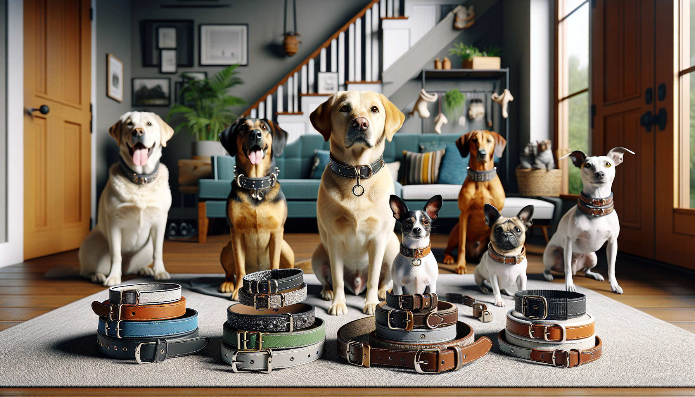

Choosing a dog collar might seem simple at first, but any pet parent knows there is a lot more to it than picking a cute color and calling it a day. The right collar should be comfortable, secure, practical for your dog’s lifestyle, and well suited to their breed’s body shape and personality. Whether you are shopping for your own pup or looking for a thoughtful gift for a dog lover, finding the perfect collar can make everyday walks safer, easier, and much more stylish.
Different breeds have different needs. A sturdy Labrador may need something very different from a delicate Italian Greyhound, while a fluffy Husky has different collar challenges than a smooth-coated Beagle. In this guide, we will walk through exactly how to choose the right dog collar for your breed, including fit, materials, collar types, and features worth considering before you buy.
One of the biggest factors in choosing the right collar is your dog’s physical build. Breed often gives you helpful clues about neck size, head shape, coat type, and strength. Dogs with thick necks and broad chests, such as Boxers, Bulldogs, and Rottweilers, often need wider, sturdier collars that distribute pressure more comfortably. Slim-necked breeds like Whippets, Greyhounds, and Salukis usually benefit from collars designed specifically for narrow heads and sensitive necks.
Small breeds such as Chihuahuas, Yorkies, and Maltese usually do best with lightweight collars that do not feel bulky or heavy. Large working breeds like German Shepherds and Labradors often need durable collars with strong hardware because they put more force on the leash during walks. Long-bodied breeds like Dachshunds may need extra attention to fit, since a collar that is too wide or stiff can feel awkward on a smaller frame.
It helps to think about your dog’s proportions rather than just their weight. Two dogs may weigh the same but have very different neck sizes and coat thickness. Breed is a great starting point, but measuring is always essential.
A beautiful collar is not the right collar if it does not fit properly. A collar that is too tight can cause discomfort, chafing, and restricted breathing. One that is too loose can slip off at exactly the wrong moment. The classic rule is that you should be able to fit two fingers comfortably between the collar and your dog’s neck.
Use a soft measuring tape around the base of your dog’s neck where the collar will sit. If your dog has very thick fur, press gently through the coat so you get a realistic measurement. Then compare that number to the sizing chart for the collar you are considering. Since sizing can vary by brand and style, never assume your dog is always a medium or always a large.
If you are buying a personalized collar, double-check measurements before ordering. Personalized items are special and meaningful, but they are best when they fit perfectly from the start.
Not all dog collars are built the same, and the best style often depends on your dog’s breed traits and walking habits. Standard flat collars are a popular everyday choice for many dogs. They work well for identification tags, daily wear, and dogs that walk calmly on leash. Breeds like Golden Retrievers, Cocker Spaniels, and mixed-breed family dogs often do great with a classic flat collar.
Martingale collars are especially helpful for breeds with narrow heads, such as Greyhounds, Whippets, and some rescue dogs that are prone to slipping out of standard collars. These collars tighten slightly when needed without the harshness of choke chains, offering more security during walks.
Rolled collars can be a good option for long-haired breeds like Shih Tzus or Afghan Hounds because they may reduce matting around the neck. Wider collars are often more comfortable for strong pullers or larger breeds because they spread pressure over a bigger area. Breakaway collars may be useful in certain situations for safety, especially for dogs who spend time indoors or in supervised low-risk environments, though they are not typically recommended for leash walking.
If your dog pulls heavily, remember that a collar alone may not solve the issue. Some breeds benefit more from pairing a comfortable collar for tags with a harness for walks and training.
Material matters just as much as style. Nylon collars are lightweight, affordable, easy to clean, and available in endless colors and patterns. They are a great everyday option for many breeds, especially active family dogs who love muddy adventures or frequent walks.
Leather collars offer a classic, timeless look and can become softer with use. They are often popular for medium to large breeds and make wonderful gifts because they feel premium and personal. With proper care, leather can be durable and beautiful for years.
Padded collars are ideal for dogs with sensitive skin, short coats, or delicate necks. Breeds like Pit Bulls, Dobermans, and Greyhounds may benefit from extra cushioning if they are prone to irritation. Waterproof or odor-resistant materials are especially useful for water-loving breeds like Labradors, Portuguese Water Dogs, and Spaniels who seem to find every puddle in sight.
When choosing material, think honestly about your dog’s routine. A fancy collar is lovely, but if your dog swims daily, rolls in the grass, and drags you through rainy trails, easy-care durability may be your best friend.
Your dog’s coat and skin can tell you a lot about what collar will feel best. Long-haired breeds may do better with smooth materials or rolled designs that reduce tangling and matting. Short-haired dogs with thin coats can be more vulnerable to rubbing, especially with rough edges or stiff straps. Hairless or sensitive-skinned breeds need especially soft, non-irritating materials.
Watch for signs that a collar is bothering your dog. Scratching, hair loss around the neck, redness, or reluctance to wear the collar can all signal a fit or material issue. Some dogs are also sensitive to heavy metal hardware, particularly if the collar is oversized for their frame.
Comfort should never be an afterthought. Since many dogs wear collars daily, the right one should feel almost unnoticeable to them. A collar that suits your dog’s breed and coat type helps prevent irritation while making everyday wear easier and more pleasant.
A good dog collar should do more than look adorable. It should support your daily routine and help keep your pup safe. Strong hardware is important, especially for larger or more energetic breeds. Look for sturdy D-rings, reliable buckles, and reinforced stitching if your dog loves to lunge, run, or play hard.
Visibility is another key detail. Reflective collars or collars with bright colors can be helpful for nighttime walks or rural areas. If your dog is an escape artist, prioritize security and proper fit over fashion alone. If your dog spends time at daycare, on hikes, or with a pet sitter, clear ID information is essential.
Personalized collars are a smart and stylish option because they combine function with personality. Having your dog’s name and contact information directly on the collar can offer extra peace of mind if tags fall off. They also make wonderful gifts for new dog parents, rescue adoptions, birthdays, and holidays.
Ask yourself a few practical questions before buying:
Of course, one of the most fun parts of choosing a collar is finding one that matches your dog’s personality. Some pups look perfect in a polished leather collar, while others shine in bright prints, floral patterns, seasonal designs, or custom personalized styles. Your dog’s collar is one of the easiest ways to show off their unique charm.
For gift shoppers, collars can be surprisingly meaningful presents. A personalized dog collar feels thoughtful, useful, and memorable. It is a practical item that still feels special, especially when chosen with the dog’s breed, coloring, and personality in mind. For pet owners, a well-chosen collar can be a small everyday upgrade that makes walks and outings feel more enjoyable.
The key is balancing style with comfort and function. The cutest collar in the world is not the best choice if it is too stiff, too heavy, or poorly suited to your dog’s breed. But when you find that sweet spot between safety, comfort, and design, you get a collar that both you and your dog will love.
Choosing the right dog collar for your breed is really about understanding your dog as an individual. Breed gives you a helpful roadmap, but the perfect collar comes down to fit, comfort, material, lifestyle, and safety. From sturdy collars for strong working breeds to gentle martingales for slender sighthounds and lightweight options for tiny companions, there is no one-size-fits-all answer.
Take the time to measure carefully, consider your dog’s daily habits, and choose a collar that supports both their needs and your personal style. A great collar is more than an accessory. It is part of your dog’s everyday comfort, security, and identity.
If you are ready to find something practical, adorable, and personal, shop personalized pet products at SnoutAndAbout on Etsy.